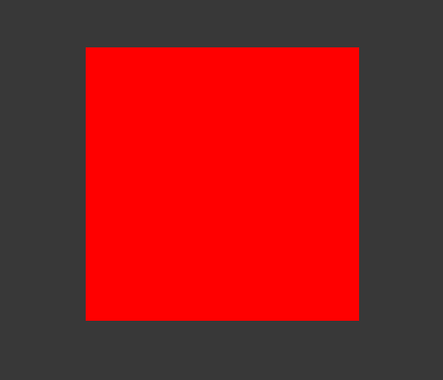
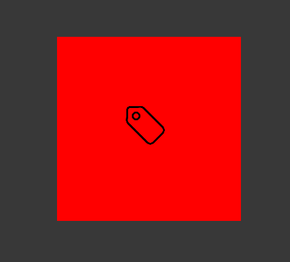
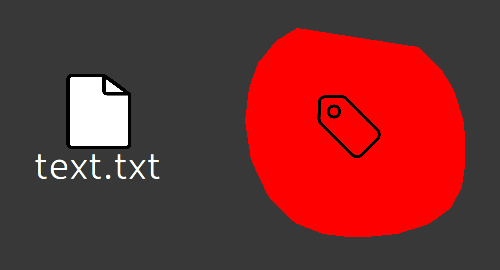
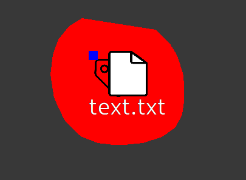
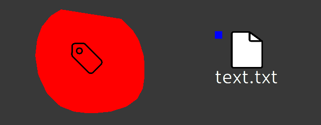
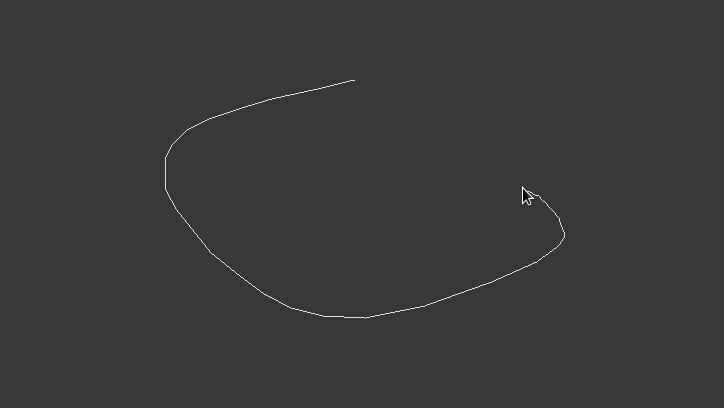
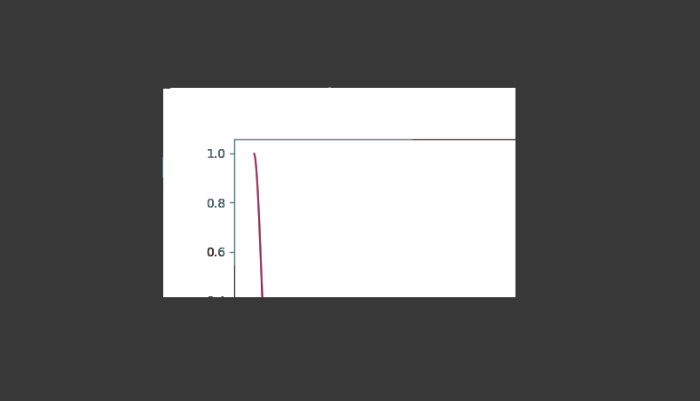
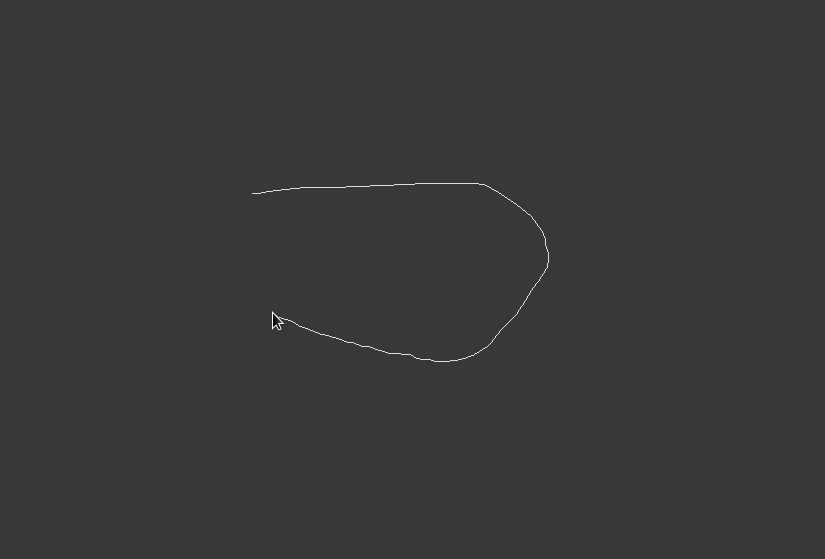
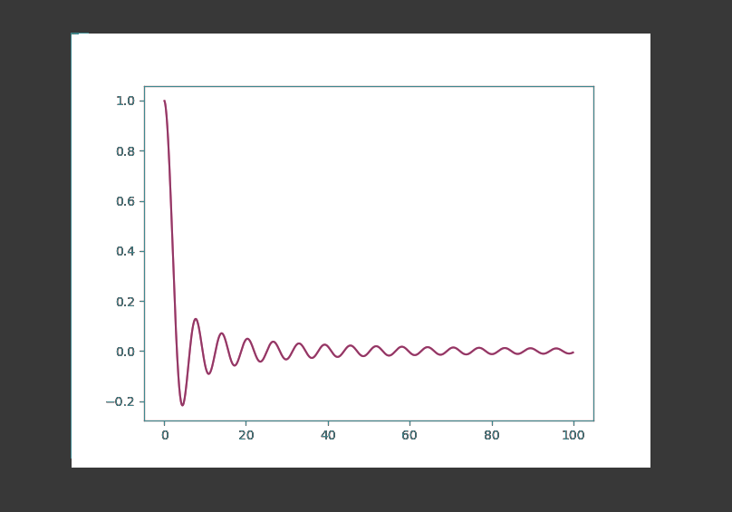

The PySI API facilitates its users to build new SI-Plugins from scratch or extend and modify existing ones. Therefore, the PySI API makes heavy use of object-oriented programming, most notably Inheritance. An SI-Plugin is an implementation of an effect of an interactive region (early concept: [1]). Such an effect is triggered once end-users overlap two interactive regions, defining a collision. Additionally, interactive regions can be linked. Such linking relationships are defined according to attributes. Application developers specify in the implementation of an effect which attributes of that effect can be linked to which attributes of other effects and which linking action shall occur. Standard attributes are either provided by the PySI API, such as position, or may be created as ad-hoc identifiers which are chosen by application developers. In Sketchable Interaction, everything is considered an SI-plugin. The very canvas you draw on is a plugin, filesystem entries such as files are plugins, where each file type can be done as a plugin which represents that type, etc.
The PySI API aims to streamline the implementation of an SI-Plugin in partially descriptive, partially imperative and self-documenting fashion. This document’s goal is to describe the PySI API beyond its code documentation. Therefore, the next sections describe PySI, its API and use case examples.
If you are just starting out with developing SI-Plugins it may be useful to play around with the PySI API first to get a feel for it. For that, skip ahead to the section Example: Implementation of a Tag-Effect. The more detailed aspects of PySI and its API are present in the other chapters and may be consulted as required. This document applies the best practices proposed by RFC2119 (keywords must, should, may)[2].
PySI exposes bindings to C++ datastructures and functions. These bindings are built with the use of Boost.Python [3] Each plugin file is stored in an object within SIGRun. This object functionally represents the pythonic self in SIGrun. Therefore, the python code implemented in the functions of SI-Plugins is executed by SIGRun once end-users trigger their events and actions. In this way, API users build application logic purely in python (with the use of python libraries available to them), while SIGRun provides the glue to present those applications to end-users.
API users configure the startup sequence of SIGRun
Startup python file must be named StartSIGRun.py
from libPySI import PySI
# further imports as you see fit such as plugin files for using their static
# members or auxiliary non-plugin python3 files
# other variables or functions
def on_start():
# configuration logic **must** be written here
pass
# other variables or functionsSummary:
MyEffect.py
from libPySI import PySI
from plugins.standard_environment_library.SIEffect import SIEffect
# same name as python file
# it is highly recommended to inherit from SIEffect for ease of use
class MyEffect(SIEffect):
regiontype = PySI.EffectType.SI_CUSTOM
regionname = PySI.EffectName.SI_STD_NAME_CUSTOM # name used only internally
region_display_name = "MyEffect" # name to be shown to end-users
def __init__(self, shape=PySI.PointVector(), uuid="", kwargs={}):
super(MyEffect, self).__init__(shape, uuid, "res/my_effect.png",
Button.regiontype, Button.regionname,
kwargs)
self.qml_path = "path/to/MyEffect.qml"
# further member variables
# further member functions Summary:
from libPySI import PySI
from plugins.standard_environment_library.SIEffect import SIEffect
class MyEffect(SIEffect):
regiontype = PySI.EffectType.SI_CUSTOM
regionname = PySI.EffectName.SI_STD_NAME_CUSTOM
region_display_name = "MyEffect"
def __init__(self, shape=PySI.PointVector(), uuid="", kwargs={}):
super(MyEffect, self).__init__(shape, uuid, "res/my_effect.png",
MyEffect.regiontype, MyEffect.regionname,
kwargs)
self.qml_path = "path/to/MyEffect.qml"
# enable an effect, according to a capability (str-value), to be emitted
# according to the collision event functions
# collison_event_on_enter_emit must be a function
# (e.g. self.on_collision_event_enter_emit) as parameter
# (must not not call the function in the parameter list)
# collison_event_on_continuous_emit must be a function
# (e.g. self.on_collision_event_continuous_emit) as parameter
# (must not not call the function in the parameter list)
# collison_event_on_leave_emit must be a function
# (e.g. self.on_collision_event_leave_emit) as parameter
# (must not not call the function in the parameter list)
self.enable_effect("your_capability", SIEffect.EMISSION,
<collison_event_on_enter_emit>,
<collison_event_on_continuous_emit>,
<collison_event_on_leave_emit>)
# enable an effect, according to a capability (str-value),
# to be received according to the collision event functions
# "your_other_capability" can be any str-value
# collison_event_on_enter_recv must be a function
# (e.g. self.on_collision_event_enter_recv) as parameter
# (must not not call the function in the parameter list)
# collison_event_on_continuous_recv must be a function
# (e.g. self.on_collision_event_continuous_recv) as parameter
# (must not not call the function in the parameter list)
# collison_event_on_leave_recv must be a function
# (e.g. self.on_collision_event_leave_recv) as parameter
# (must not not call the function in the parameter list)
self.enable_effect("your_other_capability", SIEffect.RECEPTION,
<collison_event_on_enter_recv>,
<collison_event_on_continuous_recv>,
<collison_event_on_leave_recv>)
# disable an effect, according to a collision capability (str-value),
# so the effect stops being emitted
# "your_capability" can be any str-value
self.disable_effect("your_capability", SIEffect.EMISSION)
# disable an effect, according to a collision capability (str-value),
# so the effect stops being received
# "your_other_capability" can be any str-value
self.disable_effect("your_other_capability", SIEffect.RECEPTION)
# enable a link, according to an attribute (str-value), so that the
# effect emits the given linking action (function)
# "your_attribute" may be any str-value
# <linking_action_for_emission> must be a function
# (e.g. self.linking_action) as parameter
# (must not not call the function in the parameter list)
self.enable_link_emission("your_attribute",
<linking_action_for_emission>)
# enable a link, according to a source attribute (str-value) and target
# attribute, so that the effect receives a linking action according to
# the given function
# "your_attribute" can be any str-value
# <linking_action_for_emission> must be a function
# (e.g. self.linking_action) as parameter
# (must not not call the function in the parameter list)
self.enable_link_reception("source_attribute", "your_attribute",
<linking_action_for_reception>)
# disable a link, according to an attribute (str-value), so that the
# effect stops emitting that linking action
self.disable_link_emission("your_attribute")
#disable a link, according to a source_attribute and target attribute,
# so that the effect stops receiving that linking action
# specify "your_attribute" to selectively disable that exact linking
# relationship
# leave "your_attribute" empty ("") to disable all linking relationships
# which are triggered by "source_attribute"
self.disable_link_reception("source_attribute", "your_attribute") Summary:
Item
{
function updateData(data)
{
// apply data
// e.g.
// image.width = data.width;
}
id: container
visible: true
// further QML components such as Item, Image, etc.
// .
// .
// .
}Summary:
Data originates from python calls in a SI-Plugin
self.set_QML_data("width", 200, PySI.DataType.INT)
self.set_QML_data("height", 300, PySI.DataType.INT)
self.set_QML_data("visible", True, PySI.DataType.BOOL)and then data is applied in QML for registering the styling changes
Item
{
function updateData(data)
{
// update the width, height and visibility of the container with data
// received from the associated plugin-file
// the key/value pairs of data-parameter are equal to the ones specified
// in set_QML_data
container.width = data.width; // container.width now has the value 200
container.height = data.height; // container.height now has the value
// 300
container.visible = data.visible; // container.visible now has the
// value true
}
id: container
visible: false
// further QML components such as Item, Image, etc.
// .
// .
// .
}Summary:
API Users may perform code decomposition by defining python files and classes which SIGRun must not treat as SI-Plugins
Non-Plugin Python File
# module level functions
# SIGRun scans for classes and ignores module level functions per default
def do_job():
pass
# static class for helper functions (e.g. for better definition of namespaces)
# __ as name prefix prevents SIGRun to read it as a SI-Plugin
class __MyHelperFunctions:
@staticmethod
def do_work():
pass
#function
# .
# .
# .
# class defining behaviour or serving as a complex datastructure for use in
# plugins
# __ as name prefix prevents SIGRun to read it as a SI-Plugin
class __MyHelperDatastructure:
def __init__(self, args, kwargs):
# assignment
pass
# functions
# .
# .
# .Summary:
The following sections describes the special datastructures of PySI which must be used in SI-Plugins. These datastructures originate from SIGRun and are exposed via C++-bindings which are generated with Boost.Python. The PySI API streamlines their usage.
p = PySI.Point2(5, 5)Summary:
p = PySI.Point3(5, 5, 1)Summary:
color = PySI.Color(255, 0, 255, 255)Summary:
lr = PySI.LinkRelation(source_uuid, source_attrib, target_uuid, target_attrib)Summary:
# construction
pts = PySI.PointVector() # empty
pts = PySI.PointVector([[1, 1, 1], ..., [m, n, 1]]) # list of points
# appending
pts.append(PySI.Point3(x, y, z)) # appending Point3 directly
pts.append([x, y, z]) # appending Point3 python list of exactly three floatsSummary:
# construction with list of link relationships
lrv = PySI.LinkRelationVector() # empty
lrv = PySI.PointVector([[source_uuid, source_attribute, target_uuid,
target_attribute], ...])
# appending LinkRelation directly
pts.append(PySI.LinkRelation(source_uuid, source_attrib, target_uuid,
target_attrib))
# appending LinkRelation indirectly with python list of exactly four strings
pts.append([source_uuid, source_attrib, target_uuid, target_attrib]) Summary:
# construction
sv = PySI.StringVector() # empty
sv = PySI.StringVector(["str", "str2", ..., "strn"]) # list of link relationships
# appending
sv.append("str") # appending str value directlySummary:
# construction is not performed manually
# appending of new cursor id
# adding PointVector value directly
self.__partial_regions__[cursor_uuid] = PySI.PointVector()
# appending of point according to cursor id
# adding PointVector value directly
# adding PointVector value directly
self.__partial_regions__[cursor_uuid].append(PySI.Point3(x, y, 1))
self.__partial_regions__[cursor_uuid].append([x, y, 1]) # e.g. linking relationships eligible for emission are stored in a
# String2FunctionMap per SI-plugin
def link_emission():
return "emit"
# construction
link_emit = PySI.String2FunctionMap()
link_emit = PySI.String2FunctionMap({"my_link_attribute_to_emit", link_emission})
# assignment
link_emit["my_link_attribute_to_emit"] = link_emissionIn linking action source effect:
# emission functions used in example below
def emit_data(self):
return x, y, z, self._uuid
self.enable_link_emission("my_source_attribute", self.emit_data)In linking action target effect
# e.g. linking relationships eligible for reception are stored in a
# String2String2FunctionMapMap per SI-plugin
self.enable_link_reception("my_source_attribute", "my_target ", self.receive_data)
# number of args is dependant on the number of returned values (tuple) of
# the emission function
def receive_data(self, x, y, z, source_uuid):
# use data of linking action
pass
# construction
link_recv = PySI.String2String2FunctionMapMap()
link = {"my_source_link_attribute": {"my_target_link_attribute": self.receive_data}
link_recv = PySI.String2String2FunctionMapMap(link)
# assignment
link_recv["my_source_link_attribute"]["my_target_link_attribute"] = self.receive_data
from libPySI import PySI
from plugins.standard_environment_library.SIEffect import SIEffect
class Tag(SIEffect):
regiontype = PySI.EffectType.SI_CUSTOM
regionname = PySI.EffectName.SI_STD_NAME_TAG
region_display_name = "Tag"
def __init__(self, shape=PySI.PointVector(), uuid="", kwargs={}):
super(Tag, self).__init__(shape, uuid, "res/tag.png", Tag.regiontype,
Tag.regionname, kwargs)
# specify which qml file to use
self.qml_path = "plugins/standard_environment_library/tag/Tag.qml"
# specify which color a region having the tag-effect should have
self.color = PySI.Color(255, 0, 0, 255)
# add and enable the tagging effect by specifying its capability and
# and assigning its collision event functions
self.enable_effect("tagging", SIEffect.EMISSION, self.on_tag_enter_emit,
self.on_tag_continuous_emit, self.on_tag_leave_emit)
# define the functions needed for collision events with the "tagging" capability
# when another eligible effect first collides with this one, emit that the
# other one should be tagged
def on_tag_enter_emit(self, other):
return True
# it makes no sense to redundantly tag the other effect on every collision
# event, so we leave this blank
def on_tag_continuous_emit(self, other):
pass
# we want to keep the tag beyond collision, so we leave this also blank
def on_tag_leave_emit(self, other):
pass Using the Tag-effect within a region yields something like this when drawn in SIGRun: 
Even though we specified a texture path (res/tag.png) in the constructor and specified a qml-file path (plugins/standard_environment_library/tag/Tag.qml), we do not see the texture on top of our region. In order to to make this styling visible we have to build the qml-file which associated with the Tag-effect.
import QtQuick 2.7
Item
{
// apply data provided by the SI-plugin
function updateData(data)
{
image.width = data.img_width;
image.height = data.img_height;
image.source = data.img_path;
image.anchors.leftMargin = data.widget_width / 2 - image.width / 2;
image.anchors.topMargin = data.widget_height / 2 - image.height / 2;
}
id: container
visible: true
Image {
id: image
anchors.left: parent.left
anchors.top: parent.top
visible: true
}
}Above example is the default qml-file for each SI-Plugin. It provides the functionality to draw a texture on top of a region and center it in the region. This file can automatically be created if the SIQML file template is used. PySI SIEffect automatically manages texture application once a texture path is provided in the constructor of an effect. This may look like this (in SIEffect constructor):
self.texture_path = texture_path
if self.texture_path != "":
## member attribute variable storing the width of a texture of a region
# drawing as a float
#
# This value is only set if texture_path is a valid path
self.texture_width = 75
## member attribute variable storing the height of a texture of a region
# drawing as a float
#
# This value is only set if texture_path is a valid path
self.texture_height = 75
# apply data in QML
self.__set_data__("img_width", self.texture_width, PySI.DataType.INT)
self.__set_data__("img_height", self.texture_height, PySI.DataType.INT)
self.__set_data__("img_path", self.texture_path, PySI.DataType.STRING)
self.__set_data__("widget_width", self.width, PySI.DataType.FLOAT)
self.__set_data__("widget_height", self.height, PySI.DataType.FLOAT)Now that we have created a qml-file for our SI-Plugin, we finally can see the region texture on top of our region: 
Now that we can fully draw our newly created Tag-effect in SIGRun, we want to see it in action. In order to do so, we have to adjust or create effects which can receive Tag-effects.
For this example, we expand the TextFile-plugin from the SI standard environment library. First, we have to enable the Tag-effect in TextFile.py.
# in the constructor
# note that the "tagging" capability has to be received here
# we only implemented on_enter in Tag.py so here we only need on_enter as well
self.enable_effect("tagging", self.RECEPTION, self.on_tag_enter_recv, None, None)
# outside of the constructor but inside the class, we have to define
# on_tag_enter_recv
# note that we have the is_tagged parameter due to returning one value
# in the emission function in Tag.py
# modify qml in order to show the tag on a region having the TextFile-effect
def on_tag_enter_recv(self, is_tagged):
self.set_QML_data("visible", is_tagged, PySI.DataType.BOOL) Additionally, we have to adjust TextFile.qml as well to support this new functionality. In updateData(data)-function we add the line:
function updateData(data)
{
// .
// .
// .
tag.visible = data.visible;
}And within the container component (Item), we add a Rectangle component:
Item
{
function updateData(data)
{
// .
// .
// .
tag.visible = data.visible;
}
id: container
visible: true
// .
// .
// .
Rectangle {
id: tag
width: 15
height: 15
color: "blue"
visible: false
}
}And finally after that, we can visually tag our TextFiles:
  
However, this is a minimal example for visually tagging a TextFile. Of course, you can expand this approach by passing meta data, use different colors and shapes, according to your preferences and requirements.
Preface:
The Tag-Effect is fairly simple and may hide the possibilities of SI, or at least makes it more difficult to grasp what is actually possible. To see the more powerful side of SI, you should have a look at the following sections. In that sections, an SI-Plugin is implemented which displays the result of a matplotlib plot within an interactive region.
Prerequesites:
Application:
from libPySI import PySI
from plugins.standard_environment_library.SIEffect import SIEffect
import matplotlib
matplotlib.use('Agg') # required
import matplotlib.pyplot as plt
import numpy as np
class Plot(SIEffect):
regiontype = PySI.EffectType.SI_CUSTOM
regionname = "__PLOT__"
region_display_name = "Plot"
def __init__(self, shape=PySI.PointVector(), uuid="", kwargs={}):
super(Plot, self).__init__(shape, uuid, "res/dot-plot.png",
Plot.regiontype, Plot.regionname, kwargs)
self.qml_path = "plugins/standard_environment_library/plot/Plot.qml"
self.color = PySI.Color(63, 136, 143, 255)
# matplotlib code required to plot a graph
figure = plt.figure()
plot = figure.add_subplot(111)
x = np.arange(0, 100, 0.1)
y = np.sin(x) / x
plot.plot(x, y)
# retrieve the plot as numpy.ndarray
np_fig = self.fig_2_ndarray(figure)
# get image dimensions
self.width, self.height, _ = np_fig.shape
# get effect's associated region's current x and y coordinates
# (top left corner of region's axis-aligned bounding box)
# for relative_x_pos() and relative_y_pos() see code documentation of PySI
x = self.relative_x_pos()
y = self.relative_y_pos()
# current shape may be too small to contain the complete image
# recompute shape according to image size at the regions position
# now image exactly fits into the shape (and therefore Qt5 QWidget)
self.shape = PySI.PointVector([[x, y], [x, y + self.height],
[x + self.width, y + self.height],
[x + self.width, y]])
# assign new data to QML for styling
self.set_QML_data("image", np_fig.tobytes(), PySI.DataType.BYTES,
{"width": self.width, "height": self.height})
self.set_QML_data("img_width", self.width, PySI.DataType.INT)
self.set_QML_data("img_height", self.height, PySI.DataType.INT)
# adjust the container component's dimensions to fith the target image
# adjust the container component's width to target image's width
self.set_QML_data("widget_width", self.width, PySI.DataType.FLOAT)
# adjust the container component's height to target image's height
self.set_QML_data("widget_height", self.height, PySI.DataType.FLOAT)
# helper function for getting a plot as numpy.ndarray
def fig_2_ndarray(self, fig, mode="rgba"):
fig.canvas.draw()
w, h = fig.canvas.get_width_height()
buf = np.fromstring(fig.canvas.tostring_argb(), dtype=np.uint8)
buf.shape = (w, h, 4)
if mode == "rgba":
# convert to rgba
buf = np.roll(buf, 3, axis=2)
return buf
elif mode == "argb":
return bufQML-file:
import QtQuick 2.7
import siqml 1.0
Item {
function updateData(data) {
if(data.image)
{
plot_texture.image = data.image;
plot_texture.width = data.img_width;
plot_texture.height = data.img_height;
plot_texture.anchors.leftMargin = data.widget_width / 2 - plot_texture.width / 2;
plot_texture.anchors.topMargin = data.widget_height / 2 - plot_texture.height / 2;
}
idle_texture.width = data.icon_width;
idle_texture.height = data.icon_height;
idle_texture.source = data.img_path;
idle_texture.anchors.leftMargin = data.widget_width / 2 - idle_texture.width / 2;
idle_texture.anchors.topMargin = data.widget_height / 2 - idle_texture.height / 2;
}
id: container
visible: true
Image {
id: idle_texture
anchors.left: parent.left
anchors.top: parent.top
}
PlotItem {
id: plot_texture
}
}Without adjusting the shape and qml container component of the target interactive region, behaviour such as this can be expected:
# shape and container will not be adjusted
# self.shape = PySI.PointVector([[x, y], [x, y + self.height],
# [x + self.width, y + self.height], [x + self.width, y]])
#
# self.set_QML_data("widget_width", self.width, PySI.DataType.FLOAT)
# self.set_QML_data("widget_height", self.height, PySI.DataType.FLOAT) 
However, adjusting the shape of the target region yields the desired output:
# shape will be adjusted
self.shape = PySI.PointVector([[x, y], [x, y + self.height],
[x + self.width, y + self.height], [x + self.width, y]])
self.set_QML_data("widget_width", self.width, PySI.DataType.FLOAT)
self.set_QML_data("widget_height", self.height, PySI.DataType.FLOAT) 
Summary:
[1] Wimmer, R., & Hahn, J. (2018). A Concept for Sketchable Workspaces and Workflows. https://epub.uni-regensburg.de/36818/1/A%20Concept%20for%20Sketchable%20Workspaces%20and%20Workflows.pdf
[2] RFC2119. https://tools.ietf.org/html/rfc2119
[3] Boost.Python. https://www.boost.org/doc/libs/1_73_0/libs/python/doc/html/index.html
[4] QML. https://doc.qt.io/qt-5/qtqml-index.html
[5] GLM. https://glm.g-truc.net/0.9.9/index.html